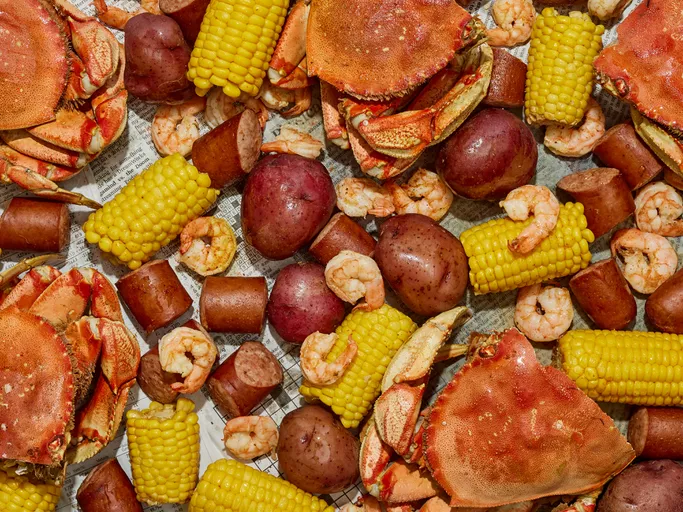

Home
Dave's Low Country Boil

Description
Low country boil is famous in Georgia and South Carolina. This boil is
done best on an outdoor cooker. It has sausage, shrimp, crab, potatoes,
and corn for an all-in-one-pot, all-you-can-eat buffet! Grab a paper plate
and a beer and enjoy!
This Low Country Boil recipe is fun, flavorful, and the perfect way to
feed a crowd. Great for outdoor entertaining and fun—a Low Country Boil is
sure to be be your new favorite summer tradition.
Ingredients
-
1 tablespoon seafood seasoning (such as Old Bay), or more to taste
- 5 pounds new potatoes
-
3 (16 ounce) packages cooked kielbasa sausage, cut into 1-inch pieces
- 8 ears fresh corn, husks and silks removed
- 5 pounds whole crab, broken into pieces
- 4 pounds fresh shrimp, peeled and deveined
Steps
- Gather all ingredients.
-
Heat a large pot of water over an outdoor cooker, or on the stovetop
over medium-high heat. Add seafood seasoning to taste and bring to a
boil.
- Add potatoes and sausage and cook for 10 minutes.
-
Break corn ears in half; add corn and crab and cook for another 5
minutes.
-
Add shrimp when potatoes are almost tender and everything else is almost
done; cook until shrimp are just cooked through, 3 to 4 minutes longer.
-
Drain off and discard the water. Pour the contents out onto a picnic
table covered with newspaper.